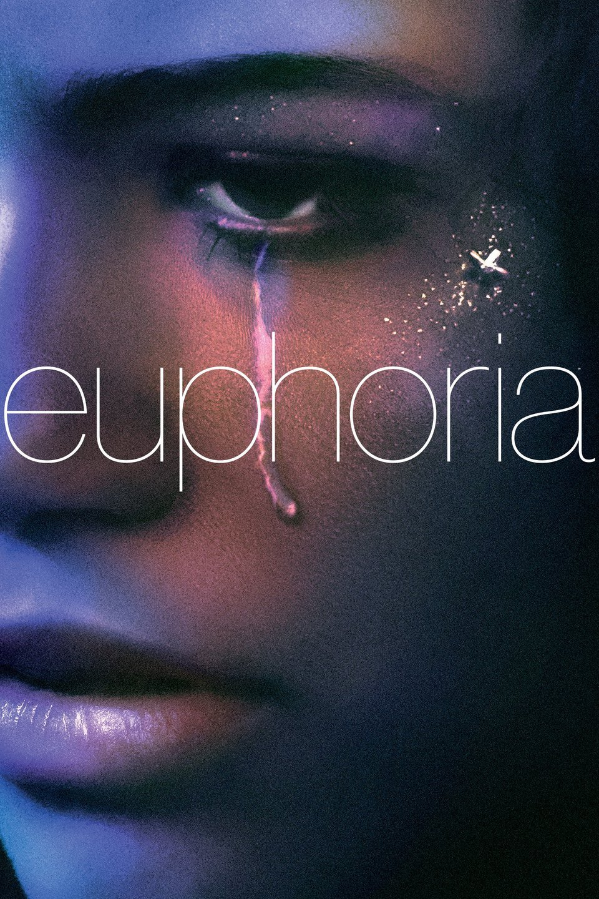

Dahmer
2022 Director: Ryan Murphy, Ian Brennan
Género: Drama
2022
La historia de uno de los asesinos en serie mas conocidos de Estados Unidos, contada en gran parte desde los puntos de vista de sus victimas.
Audio: Latino
Director: Ryan Murphy, Ian Brennan
Elenco: Evan Peters, Niesy Nash, Colin Ford, Pennelope Ann Miller
Género: Drama
calificacion: 8/10

Nine Perfec
Stranger
2021Director: David E. Kelley, Jhon Henry Butterworth
Género: Thriller, Drama
Stranger
2021
Un complejo de salud y bienestar promete curacion y transformacion a nueve estresados habitantes de la ciudad que intentan iniciar el camino hacia una vida mejor.
Audio: Latino
Director: David E. Kelley, Jhon Henry Butterworth
Elenco: Nicole Kidman, Melissa McCarthy, Bobby Cannavale, Luke Evans, Regina Hall, Michael Shannon
Género: Thriller, Drama
4.2/5


Pretty Little
Liars: Un Nuevo
Pecado 2022 Género:Drama, Thriller
Liars: Un Nuevo
Pecado 2022
Hace veinte años, una serie de trágicos eventos casi destrozaron a Millwood. Ahora, en la actualidad, un nuevo grupo de pequeñas mentirosas se ve atormentado por un asaltante desconocido.
Audio: Latino
Creador:Roberto Aguirre-Sacasa Elenco: Alex Aiono, Bailee Madison, Chandler Kinney, Elena Goode, Eric Johnson
Género:Drama, Thriller
8.5/10


La Casa del
Dragon 2022 Director: George R.R Martin, Ryan J. Condal
Género: Drama, Accion
Dragon 2022
La historia de la familia Targaryen, 200 años antes de los eventos que tuvieron lugar entre "Game of Thrones".
Audio: Latino
Director: George R.R Martin, Ryan J. Condal
Elenco: Milly Alcock, Emma De Arcy, Olivia Cooke, Paddy Colsidine
Género: Drama, Accion
calificacion: 4.2/5

Euphoria
2019 Director: Samuel Levinson
Género: Drama
2019
Un grupo de adolecente navegan en sus conflictos internos relacionados con el sexo, el uso de drogas y violencia. Ellos trataran de lidiar con sus propios demonios, a fin de superar los obstaculos que se interponen en sus metas o, simplemente, en su dia a dia.
Audio: Latino
Director: Samuel Levinson
Elenco: Zendaya, Jacob Elordi, Sidney Sweeney, Hunter Schafer, Alexa Demie
Género: Drama
calificacion: 4.8/5


Stranger
Things 2016 Género: Ciencia Ficcion, Thriller, Drama
Things 2016
Cuando un niño desaparece, sus amigos, la familia y la policia se ven envueltos en una serie de eventos misteriosos al tratar de encontarlo. Su ausencia coincide con el avistamiento de una criautura terrorifica y la aparicion de una extraña niña.
Audio: Latino
Creador: Matt Duffer, Ross Duffer Elenco: Millie Bobby Brown, Finn Wolfhard, Noah Schanpp, Joe Keery, Winona Ryder, David Harbour
Género: Ciencia Ficcion, Thriller, Drama
4.9/5
Capitulos
- T1-Cap 1
- T1-Cap 2
- T1-Cap 3
- T1-Cap 4
- T1-Cap 5
- T1-Cap 6
- T1-Cap 7
- T1-Cap 8
- T2-Cap 1
- T2-Cap 2
- T2-Cap 3
- T2-Cap 4
- T2-Cap 5
- T2-Cap 6
- T2-Cap 7
- T2-Cap 8
- T2-Cap 9
- T3-Cap 1
- T3-Cap 2
- T3-Cap 3
- T3-Cap 4
- T3-Cap 5
- T3-Cap 6
- T3-Cap 7
- T3-Cap 8
- T4-Cap 1: PROXIMAMENTE
- T4-Cap 2: PROXIMAMENTE
- T4-Cap 3: PROXIMAMENTE
- T4-Cap 4: PROXIMAMENTE
- T4-Cap 5: PROXIMAMENTE
- T4-Cap 6: PROXIMAMENTE
- T4-Cap 7: PROXIMAMENTE
- T4-Cap 8: PROXIMAMENTE
- T4-Cap 9: PROXIMAMENTE

Criado Por
Los Lobos
2020 Género: Ciencia Ficcion, Drama
Los Lobos
2020
Dos androides tienen la importante tarea de criar niños humanos en un misterioso planeta virgen. Cuando la colonia humana comienza a desgarrarse por diferencias religiosas, los androides aprenden que las creencias de la humanidad son traicioneras.
Audio: Latino
Director: Aaron Guzi Kowski, Ridley Scott Elenco: Amanda Collins, Winta McGradth, Travis Fimmel, Felix Jamieson, Ivy Wong
Género: Ciencia Ficcion, Drama
4.5/5

She Hulk
2022 Director: Jessica Gao, Jack Kirby, John Buscena
Género: Accion, Drama, Comedia
2022
Jennifer Walters tiene una vida complicada como abogada soltera y tambien resulta ser un armatoste superpoderoso verde.
Audio: Latino
Director: Jessica Gao, Jack Kirby, John Buscena
Elenco: Tatiana Maslany, Jameela Jamil, Ginger Gonzaga, Mark Ruffalo, Tim Roth
Género: Accion, Drama, Comedia
calificacion: 5/10


The Sandman
2022 Director: Neil Gaiman, Allan Heinberj, David S. Goyer
Género: Drama, Terror
2022
Cuando Sandman, el ser cosmico que controla los sueños, es capturado y mantenido prisionero durante mas de un siglo, debe viajar a traves de diferentes mundos y lineas de tiempo para arreglar el caos que ha causado su ausencia.
Audio: Latino
Director: Neil Gaiman, Allan Heinberj, David S. Goyer
Elenco: Tom Sturridge, Gwendoline Shristie, Jenna Coleman, David Thewlis
Género: Drama, Terror
calificacion: 9/10
El Juego del
calamar 2021 Director: Hwanj Donj-Hyuk
Género: Drama, Accion, Thriller
calamar 2021
Cientos de personas con dificultades economicas aceptan una extraña invitacion a un juego de supervivencia. Les espera un premio millonario, pero hay mucho en juego.
Audio: Latino
Director: Hwanj Donj-Hyuk
Elenco: Hoyeon Jung, Lee Jung-Jae, wi Ha-joon, Park Hae-soo, Lee Byung Hun
Género: Drama, Accion, Thriller
calificacion: 9.5/10

Gambito de
Dama 2020 Director: Scott Frank, Allan Scott
Género: Drama
Dama 2020
La huerfana y prodigio del ajedrez, Beth Harmon, lucha contra la adiccion mientra busca convertirce en la mejor jugadora de ajedrez del mundo.
Audio: Latino
Director: Scott Frank, Allan Scott
Elenco: Anya Taylor-Joy, Thomas Brodie-Sanjster, Moses Ingram
Género: Drama
calificacion: 9.5/5

Rebelda
2022 Género: Drama
2022
En una escuela de elite, Un grupo de amigos enfrenta los desafios de la mayoria de edad, las rivalidades y las pasiones mientras persiguen su sueñode triunfar en la musica.
Audio: Latino
Director: Cris Morena Elenco: Lizeth Selene, Azul Guaita, Franco Masini, Jeronimo Cantillo
Género: Drama
3/5
The Defenders
2017 Género: Accion, Ciencia Ficcion, Drama
2017
Apesar de estar agobiados por sus desafios personales, Dare Devil, Jessica Junes, Luke Caje y Iron Fist se dan cuentan de que la unica manera de salvar la ciudad de New York es si se unen y forman The Defenders.
Audio: Latino
Director: S. J. Clarkson Elenco: Finn junes, Charlie Cox, Mike Colter, Krysten Ritter, Sigourney Weaver
Género: Accion, Ciencia Ficcion, Drama
4.7/5


Sex Education
2019 Director: Laurie Nunn
Género: Drama, Comedia
2019
Otis siempre tiene una respuesta respecto al sexo. Otis se une a su amiga Maeve para abrir una clinica de terapia sexual en la escuela.
Audio: Latino
Director: Laurie Nunn
Elenco: Asa Butterfield, Emma Mackey, Nsuty Gatwa, Gillian Anderson
Género: Drama, Comedia
calificacion: 9/10


Elite
2018 Director: Carlos Monteros, Dario Madrona
Género: Drama, Thriller
2018
Las Encinas es el colegio mas exclusivo de España, el lugar donde estudian los hijos de la elite y donde acaban de ser admitidos tres jovenes de clase baja, procedentes de un colegio publico en ruinas.
Audio: Latino
Director: Carlos Monteros, Dario Madrona
Elenco: Itzan Escamilla, Maria Pedraza, Aron Pipper, Miguel Bernardau, Omar Ayuso, Danna Paola, Mina Elhammani, Ester Exposito
Género: Drama, Thriller
calificacion: 8/10
Capitulos
- T1-Cap 1
- T1-Cap 2
- T1-Cap 3
- T1-Cap 4
- T1-Cap 5
- T1-Cap 6
- T1-Cap 7
- T1-Cap 8
- T2-Cap 1
- T2-Cap 2
- T2-Cap 3
- T2-Cap 4
- T2-Cap 5
- T2-Cap 6
- T2-Cap 7
- T2-Cap 8
- T3-Cap 1
- T3-Cap 2
- T3-Cap 3
- T3-Cap 4
- T3-Cap 5
- T3-Cap 6
- T3-Cap 7
- T3-Cap 8
- T4-Cap 1
- T4-Cap 2
- T4-Cap 3
- T4-Cap 4
- T4-Cap 5
- T4-Cap 6
- T4-Cap 7
- T4-Cap 8
- T5-Cap 1
- T5-Cap 2
- T5-Cap 3
- T5-Cap 4
- T5-Cap 5
- T5-Cap 6
- T5-Cap 7
- T5-Cap 8

Resident
2022 Director: Paul S. W. Anderson
Género: Terror, Drama
2022
Catorce años despues de que un virus mortal causara un apocalipsis global, Jade Wesker lucha por sobrivivir en mundo invadido por criaturas infectadas mientras su pasado, su padre y lo que le sucedio a su hermana Billie la persiguen.
Audio: Latino
Director: Paul S. W. Anderson
Elenco: Ella Balinska, Paola Nuñez, Siena Agudong, Lance Reddick
Género: Terror, Drama
calificacion: 6/10

La Primera
Muerte 2022 Director: V. E. Schwav
Género: Drama
Muerte 2022
Enamorarce es complicado para las adolecentes Juliette y Calliope porque es una vampira y la otra es una cazadora de vampiros. Ambas estan listas para cometer su primera muerte .
Audio: Latino
Director: V. E. Schwav
Elenco: Sarah Katherine, Imani Lewis, Elizabth Mitchell
Género: Drama
calificacion: 4.9/5


Los Bridgerton
2020Director: Shonda Lynn Rhrimes
Genero:Drama, Romance
2020
Ochos hermanos de la poderosa familia Bridgerton intetan encontrar el amor y la felicidad de la alta sociedad londinence.
Audio: Latino
Director: Shonda Lynn Rhrimes
Elenco: Rage-Jean Page, Phoebe Dynevor, Simone Ashley, Jonathan Bailey, Nocila Coughlan, Claudia Gessie
Genero:Drama, Romance
4.6/5

Sky Rojo
2021 Director: Alex Pino, Esther Martinez Lobato
Género: Drama, Accion, Comedia, Thriller
2021
Tres prostitutas, una cubana, una argentina y una española, deciden uir de su proxeneta. Tras haber cometido varios delitos, las jovenes no pueden acudir a la policia en busca de ayuda.
Audio: Latino
Director: Alex Pino, Esther Martinez Lobato
Elenco: Lali Esposito, Miguel Angel Silvestre, Veronica Sanchez, Yany Prado
Género: Drama, Accion, Comedia, Thriller
calificacion: 3.5/5

Cobra Kai
2018 Director: Jon Hurwitz, Josh Heald, Hayden Schlossberg
Género: Comedia, Drama,
2018
Treinta y cuatro años despues de los eventos del torneo de karate All Valley de 1984, Johnny Lawrence busca la redencion al abrir un dojo Cobra Kai, reavivando su rivalidad con un exitoso Daniel LaRusso.
Audio: Latino
Director: Jon Hurwitz, Josh Heald, Hayden Schlossberg
Elenco: Ralph Macchio, William Zabka, Xolo Maridueña, Peyton List, Jacob Bertrand
Género: Comedia, Drama,
calificacion: 4.9/5


La Casa de
Papel: Corea 2022 Director: Kim Honj-seon
Género: Drama, Accion, Thriller
Papel: Corea 2022
La serie es una version de la popular serie española La Casa De Papel, de Alex Pina.
Audio: Latino
Director: Kim Honj-seon
Elenco: Jeon Jong-seon, lee Joo-bin, Park Hae-soo, Yoo Ji-tae
Género: Drama, Accion, Thriller
calificacion: 4.1/5
Chernobyl
2019 Director: Johan Renck
Género: Drama
2019
Valientes hombres y mujeres luchan por mitigar los daños de la catastrofe nuclear de Chernobyl ocurrida el 25 de abril de 1986.
Audio: Latino
Director: Johan Renck
Elenco: Jared Harris, Stellan Skarsjard, Paul Ritter
Género: Drama
calificacion: 5/5


The Umbrella Academy
2019 Director: Gerard Way
Género: Accion, Drama, Ciencia Ficcion,Comedia
2019
Una familia disfuncional de superheroes se reune para resolver el misterio de la muerte de su padre y la amenaza del apocalipsis.
Audio: Latino
Director: Gerard Way
Elenco: Aidan Gallagher, Elliot Page, Robert Sheehan
Género: Accion, Drama, Ciencia Ficcion,Comedia
calificacion: 4.9/5
Peaky Blinders
2013 Director: Steven Knight, Toby Finlay, Stephen Russell
Género: Drama, Thriller
2013
Gran Bretaña vive la posguerra. Los soldados regresan, se acuñan nuevas revoluciones y nacen bandas criminales en una nacion agitada. En Birmingham, una pandilla de gansters callejeros asciende hasta convertirse en los reyes de la clase obrera.
Audio: Latino
Director: Steven Knight, Toby Finlay, Stephen Russell
Elenco: Cillian Murphy, Paul Anderson, Tom Hardy
Género: Drama, Thriller
calificacion: 4.9/5
Capitulos
- T1-Cap 1
- T1-Cap 2
- T1-Cap 3
- T1-Cap 4
- T1-Cap 5
- T1-Cap 6
- T2-Cap 1
- T2-Cap 2
- T2-Cap 3
- T2-Cap 4
- T2-Cap 5
- T2-Cap 6
- T3-Cap 1
- T3-Cap 2
- T3-Cap 3
- T3-Cap 4
- T3-Cap 5
- T3-Cap 6
- T4-Cap 1
- T4-Cap 2
- T4-Cap 3
- T4-Cap 4
- T4-Cap 5
- T4-Cap 6
- T5-Cap 1
- T5-Cap 2
- T5-Cap 3
- T5-Cap 4
- T5-Cap 5
- T5-Cap 6
- T6-Cap 1
- T6-Cap 2
- T6-Cap 3
- T6-Cap 4
- T6-Cap 5
- T6-Cap 6

La Casa de Papel
2017 Director: Alex Pina
Género: Drama, Thriller, Accion
2017
Una banda organizada de ladrones se propone cometer el atraco del siglo en la Fabrica Nacional de Moneda y Timbre. Cinco meses de preparacion quedaran reducidos a once dias para poder llevar a cabo con exito el gran golpe.
Audio: Latino
Director: Alex Pina
Elenco: Alvaro Morte, Ursula Corbero, Pedro Alonso, Alba Flores, Itziar Ituño
Género: Drama, Thriller, Accion
calificacion: 4.6/5

Tribus de Europa
2021 Director: Philip Koch
Género: Ciencia Ficcion, Drama
2021
En 2070, tres hermanos se proponen cambiar el destino de Europa despues de que una catastrofe mundial la convierte en microestados que luchan por tener el dominio sobre el resto.
Audio: Latino
Director: Philip Koch
Elenco: Melika Foroutan, Emilio Sakraya, Henriette Conforius, David Ali Rashed
Género: Ciencia Ficcion, Drama
calificacion: 4.6/5

Daredevil
2015 Director: Kati Johnston
Género: Drama, Thriller, Accion
2015